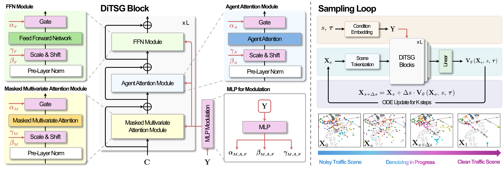
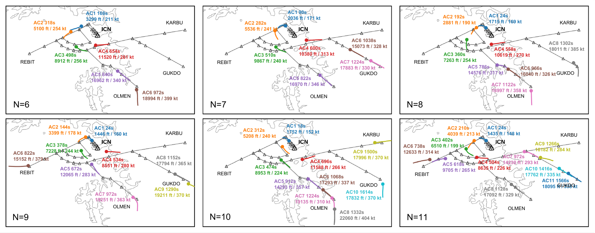
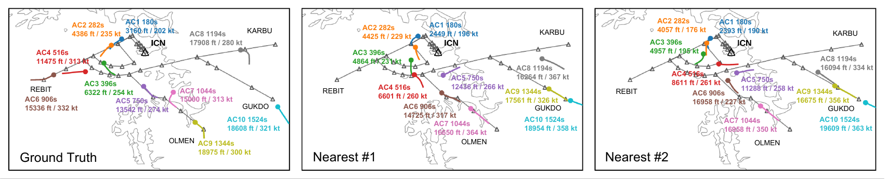
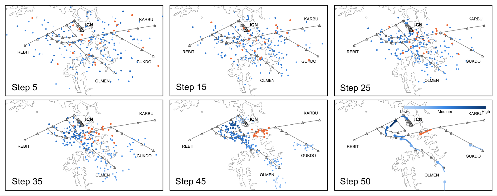

Understanding how many aircraft, and which traffic configurations, can be safely and efficiently managed by air traffic controllers within a given airspace is fundamental to air traffic management. Air traffic controllers continuously modify trajectories through interventions such as radar vectoring, and the patterns of these interventions are difficult to capture effectively using existing simulation-based methods. To address this limitation, we propose DiTSG, a context-aware framework that learns air traffic scenes directly from recorded operations. DiTSG employs stacked multi-agent inverted Transformer layers as the denoising backbone of a diffusion transformer and jointly generates the trajectories of multiple aircraft within a scene. The resulting trajectories generated by DiTSG preserve realistic inter-aircraft interactions observed in actual air traffic operations. Experiments show that DiTSG generates diverse traffic scenes that reproduce the statistical properties of recorded traffic while preserving realistic inter-aircraft interactions.

We propose Diffusion Transformers for Traffic Scene Generation (DiTSG), a context-aware generative model for multi-agent air traffic scenes. DiTSG employs stacked multi agent inverted Transformer (MAIFormer) [Yoon et al., 2026] layers as the denoising backbone of a diffusion transformer. Starting from noise, DiTSG iteratively refines the trajectories of all aircraft in a scene while modeling inter-aircraft dependencies at every denoising step. We condition the generation process on agent-specific required times of arrival (RTAs), enabling different temporal traffic configurations to be generated. This joint denoising process enables the generated trajectories to remain mutually consistent while preserving realistic traffic interactions.

Across all panels, DiTSG distributes aircraft over the four arrival fixes (REBIT, OLMEN, GUKDO, and KARBU), although the conditioning does not specify which fix to use. The scenes also show coherent arrival sequencing: aircraft with earlier RTAs are closer to the runway, lower, and slower. Even when deviating from the standard terminal arrival routes (STARs), aircraft form common arrival flows consistent with traffic organization through ATC vectoring. This suggests that DiTSG captures not only the spatial distribution of traffic but also operational patterns induced by ATC vectoring.

To assess whether DiTSG generates alternative traffic realizations under the same condition, we take the RTAs from a real scene and generate multiple scenes using those same RTAs. A useful generative model should represent the range of traffic scenes that could plausibly occur under a given condition, not the one scene that happened to be recorded. Shown here is the ground-truth recorded scene alongside the two generated samples closest to it; even these closest samples remain visibly different. The same RTAs and arrival sequence can therefore correspond to different plausible trajectory configurations, and DiTSG generates such alternatives rather than reproducing the recorded scene.

The query aircraft is shown in orange, while the others are colored according to the attention they receive from the query. Up to about step 25, the scores remain nearly uniform because the scene is still dominated by noise and little relational structure has emerged. As denoising progresses, the attention becomes more differentiated: the query assigns higher attention to aircraft ahead in the arrival sequence and lower attention to those behind. This behavior is consistent with arrival operations, where preceding aircraft often have a stronger influence on following traffic. DiTSG learns this interaction pattern directly during generation without explicit supervision on which aircraft should be attended to.
@article{yoon2026ditsg,
author = {Yoon, Seokbin and Kim, Kyungmin and Kwon, Taejung and Lee, Keumjin and Wei, Peng},
title = {DiTSG: Context-Aware Air Traffic Scene Generation with Multi-Agent Diffusion Transformers},
journal = {TODO Venue},
year = {2026},
}